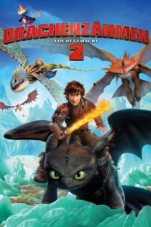

Alternativ: How to Train Your Dragon 2
Auszeichnungen: für 1 Oscars nominiert 1 GoldenGlobes gewonnen
 
 IMDB-Wertung: 7.8 / 10
IMDB-Wertung: 7.8 / 10  Metascore:
Metascore: 
Nachdem die Wikinger der Insel Berk lange Zeit Jagd auf die Drachen gemacht haben, hat sich einiges geändert: Menschen und Drachen haben sich angefreundet und das Drachenreiten ist ein beliebter Sport geworden. Nur Hicks, der den Wandel in Gang gebracht hat, erkundet mit seinem Drachen Ohnezahn lieber die Gegend. Eines Tages entdecken beide eine geheimnisvolle Eishöhle mit vielen neuen Drachenarten. Bald liegt es an ihnen, einen neuen Krieg zwischen Drachen und Menschen zu verhindern.
Jahr: 2014
Dauer: 102 Minuten
FSK: 6
Land: USA Studio: 20th Century FoxTonspuren:
Untertitel: Englisch,
Auflösung: 1080p (1920x1080) Größe: 10444 MB
Genre: Action, Komödie, Abenteuer, Fantasy, Animation/Trick, Familie
Regisseur:  Dean DeBlois
Dean DeBlois
Drehbuch: Dean DeBlois, Cressida Cowell
Soundtrack: John Powell
Darsteller:
 Jay Baruchel als Hiccup
Jay Baruchel als Hiccup Cate Blanchett als Valka
Cate Blanchett als Valka Gerard Butler als Stoick
Gerard Butler als Stoick Craig Ferguson als Gobber
Craig Ferguson als Gobber America Ferrera als Astrid
America Ferrera als Astrid Jonah Hill als Snotlout
Jonah Hill als Snotlout Christopher Mintz-Plasse als Fishlegs
Christopher Mintz-Plasse als Fishlegs T.J. Miller als Tuffnut
T.J. Miller als Tuffnut Kristen Wiig als Ruffnut
Kristen Wiig als Ruffnut Djimon Hounsou als Drago
Djimon Hounsou als Drago Kieron Elliott als Hoark the Haggard
Kieron Elliott als Hoark the HaggardDatei: X:\Kinder Collections\Drachenzähmen leicht gemacht\Drachenzähmen leicht gemacht 2 (2014, FSK6, 1920x1080) 3D.mkv seit 12.03.2015
Festplatte: Kinder-Filme+Trick
 Es gibt insgesamt 11 Filme in der Gruppe 'Kinder Collections\Drachenzähmen leicht gemacht'
Es gibt insgesamt 11 Filme in der Gruppe 'Kinder Collections\Drachenzähmen leicht gemacht'